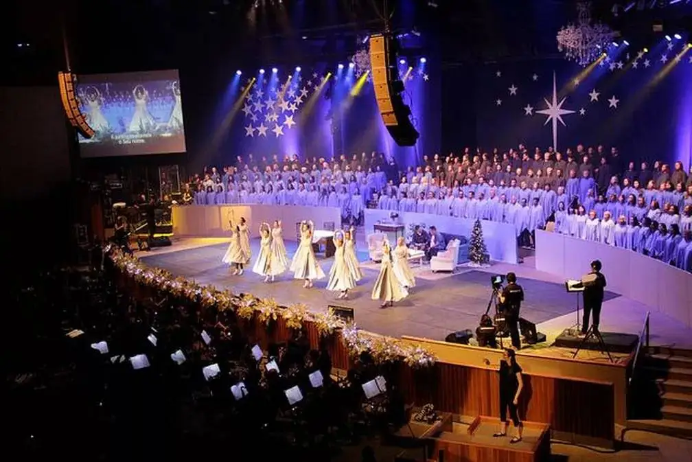
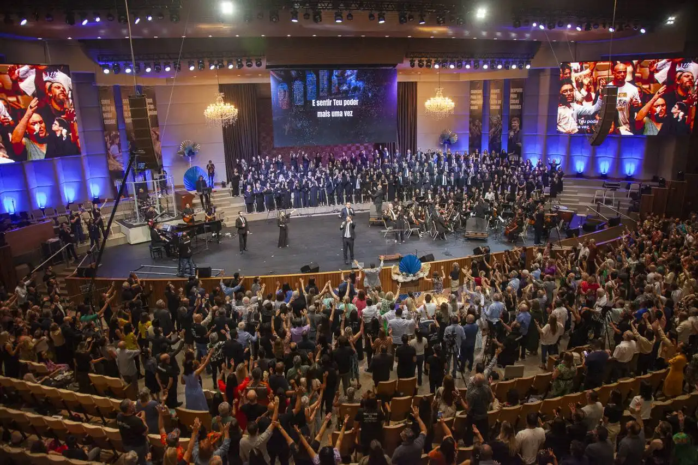
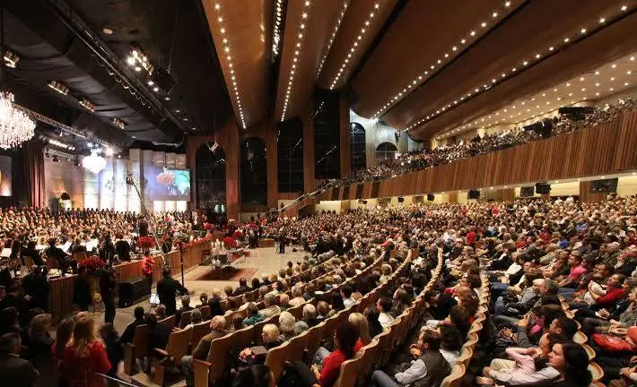
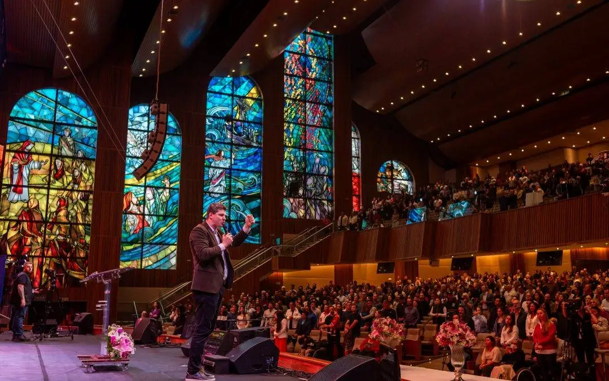

Primeira Igreja Batista de Curitiba · Batel
Apresentação: Antônio Neto
Toque à direita/deslize para avançar →One Flow (adolescentes) e ONE+ (jovens adultos) · ~19h30
ONE (jovens) · 17h e 19h30
9h · 11h · 17h · 19h
Atenção Não há culto no sábado de manhã.
25/04/2026 · 9h às 17h
Festa anual de aniversário da igreja: feira gastronômica, bazar, outlet, empório e apresentações musicais
Números a confirmar com a igreja
Dezembro · 2025: 19, 20, 22, 23 e 25/12
Datas de 2026 a confirmar
Uma Voz · Musical Koinonia · Summit · Missão Casais · Cristolândia


mais de 17 mil de público, expectativa divulgada (5 noites)
Fontes: Clube Disk Ingressos, 09/12/2025
Sem dados oficiais; com base na expectativa divulgada do Nataleluia, estimativa semelhante: mais de 17 mil. Estimativa por analogia, não é dado oficial. A confirmar com a igreja.
Entrada gratuita, sem inscrição, das 9h às 17h no estacionamento da PIB
Festa anual de aniversário: feira gastronômica, bazar, outlet, empório e apresentações musicais (pibcuritiba.org.br/celebre24)
Fonte: pibcuritiba.org.br
a norma do Corpo de Bombeiros do Paraná (NPT 017/2021), junto com a ABNT NBR 14276. A convenção coletiva não trata dessa proporção.
1 brigadista para cada 200 pessoas, arredondando para cima.
Cada bombeiro civil profissional vale por 5 brigadistas.
Em eventos, a conta é feita sobre o público + 30%.
17 mil pessoas → 22.100 com os 30% → 111 brigadistas, ou 23 bombeiros civis.
Brigadistas
Bombeiros civis
Base: —
No Nataleluia passado houve contratempos pontuais: escada, técnico de segurança/aprovação e multa.
Com esta parceria, esses pontos são tratados antes do evento, para que não se repitam.
Houve incidentes envolvendo a escada.
Questão de segurança e de técnico de segurança, frente na qual a nossa equipe presta a assessoria.
Num dia de lotação máxima, uma pessoa em situação de rua, já conhecida pela segurança por furtos e pequenos conflitos na igreja, deixou uma caixa totalmente fechada no meio do evento. Tratada como possível bomba, a situação poderia gerar um tumulto impossível de conter. Como a equipe já conhecia o indivíduo, o caso foi controlado com rapidez e o conflito, evitado.
Situações assim podem ocorrer em diversos cultos e eventos, sobretudo diante de acontecimentos recentes como atentados a escolas, grandes incêndios e conflitos. Equipe preparada, que conhece o público e o espaço, responde com calma e evita que um incidente vire tumulto.
É impossível parar o culto para treinar a evacuação.
Fechar uma porta por culto, redirecionando o público: um treino prático, real e sem tumulto.


Milhares de pessoas por culto: cada saída precisa estar treinada.
por culto
Parceria direta com uma ambulância, presente em cultos específicos.
Dois ou mais voluntários em serviço ficam junto à ambulância, convidando quem chega para um atendimento prévio: aferir a pressão, verificar a saúde e tirar dúvidas.
Atendimento muito rápido durante o culto. O primeiro atendimento é feito pelos bombeiros civis já presentes, junto com a equipe de brigada. Se uma ocorrência exigir encaminhamento, os próprios voluntários podem acompanhar.
Oportunidade única de estágio, no próprio local, para os brigadistas voluntários em capacitação.
voluntários treinados
3 treinamentos trimestrais
+ 1 do Ministério Infantil (até 100 pessoas)
~150 pessoas capacitadas × R$ 90
Equipe de brigada + assessoria + supervisão
Não participamos.
R$ 90 por pessoa, cobrados à parte para brigada, Celebre e Nataleluia.
Contrato anual unificado, com desconto para as duas partes.
Base por bombeiro: sexta R$ 150 (culto da noite) · sábado R$ 250 · domingo R$ 250 = R$ 650 por fim de semana (2 bombeiros: R$ 1.300).
Mensal · completo
Todos os cultos, 4 fins de semana.
1 bombeiro
por mês
2 bombeiros
por mês
Quinzenal
Um culto sim, um culto não: metade dos cultos.
1 bombeiro
por mês
2 bombeiros
por mês
Mensal pontual
Um fim de semana por mês.
1 bombeiro
por mês
2 bombeiros
por mês
Valores a definir em conjunto com a liderança, com desconto para as duas partes.
Completo · sexta, sábado e domingo · 4 fins de semana
Quinzenal · 2 fins de semana
Mensal · 1 fim de semana
Estarmos juntos em todos os eventos, cuidando da brigada e da segurança.
Capacitando os profissionais.
Treinamento para os voluntários.
Possibilidade de estágio para os voluntários.
Cuidado com os voluntários do Ministério Infantil, com um carinho especial a mais.
Capacitar mais de 250 voluntários por ano.
Treinamento contínuo para os voluntários.
Possibilidade de estágio para voluntários diretamente na ambulância da PIB.
Antônio Neto
Segurança, Brigada e Capacitação